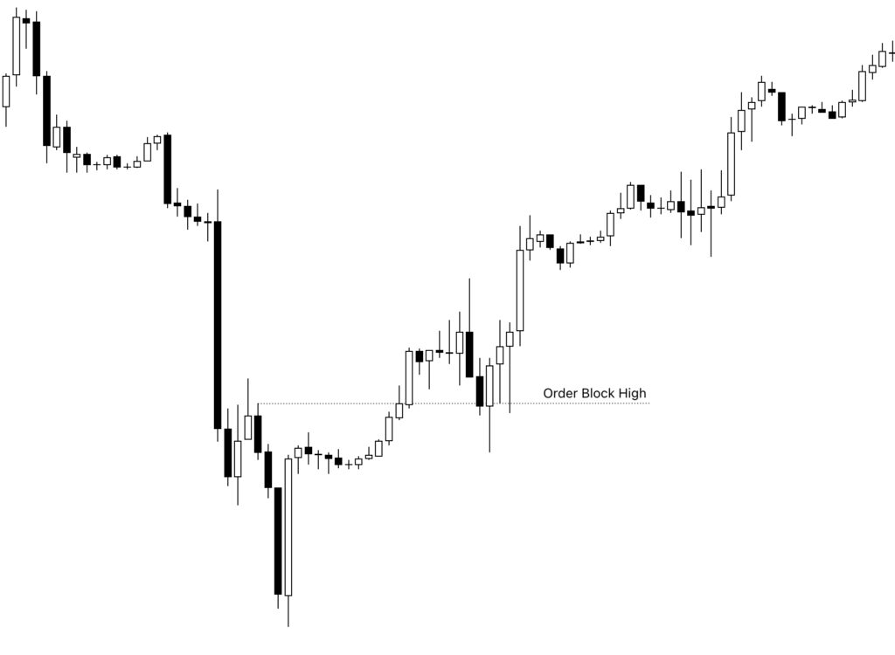
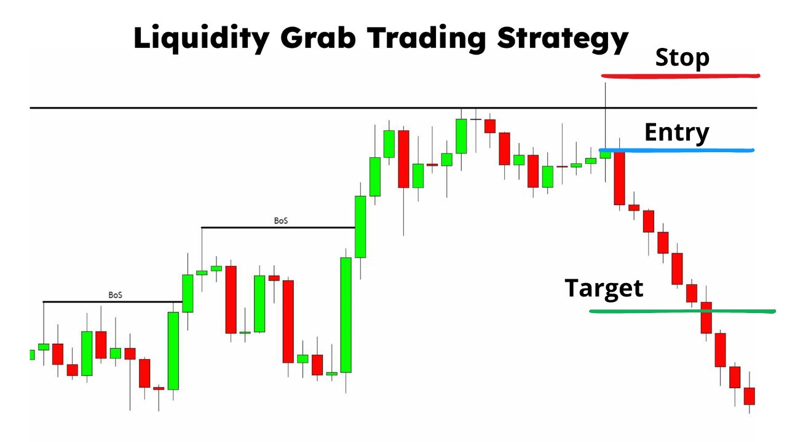
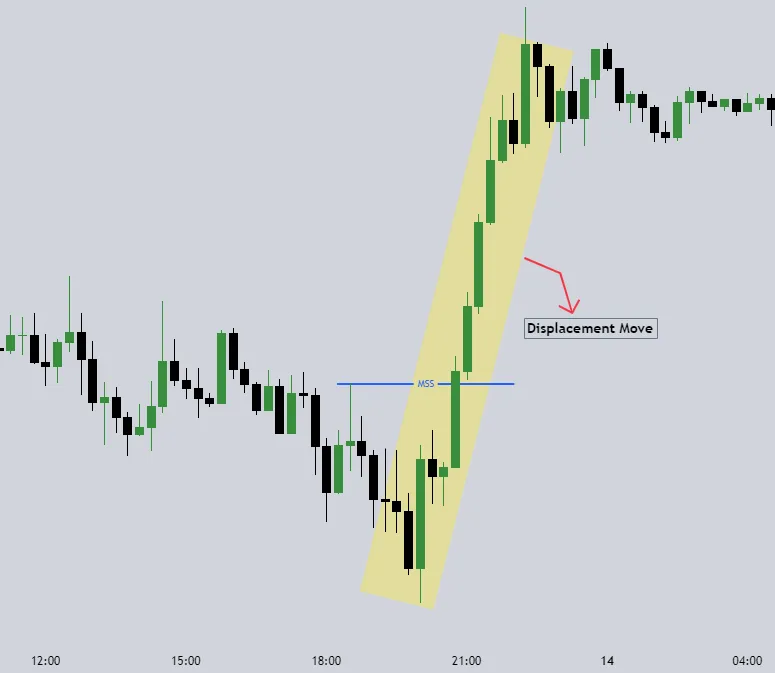
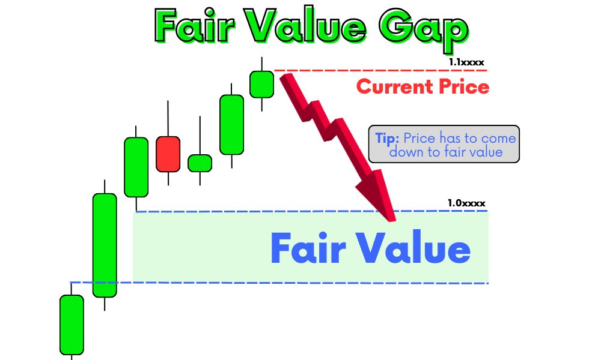

Understanding and mastering trading strategies is crucial for success in the Forex market. Below are some essential ICT-based trading strategies that can improve your trading skills.
Order blocks represent key areas where institutional traders (smart money) have placed significant buy or sell orders. Identifying these areas helps traders predict future price movements.
Liquidity grabs occur when the market moves to trigger stop-losses before reversing in the intended direction. This is often seen around support and resistance levels.
Market structure shifts indicate a change in trend direction. Identifying these shifts early can help traders catch new trends before they fully develop.
Fair Value Gaps occur when price moves aggressively, leaving an imbalance in the market. These gaps often get filled before price continues its trend.
